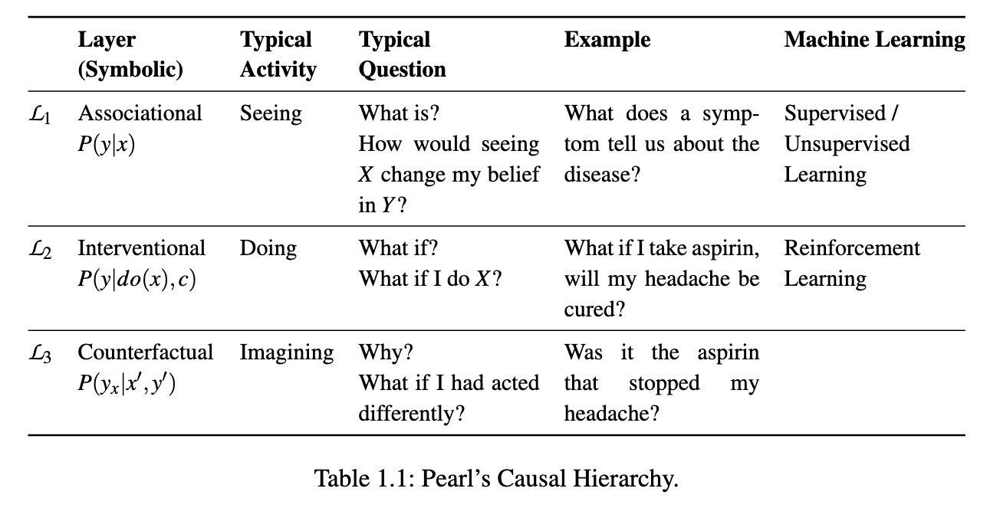
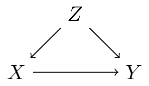
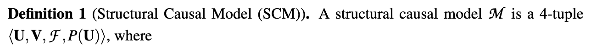
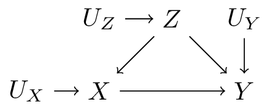
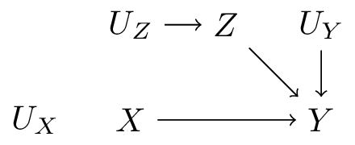
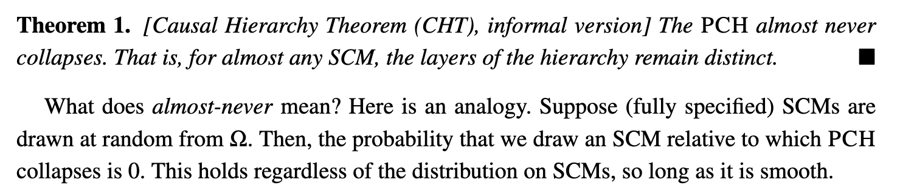
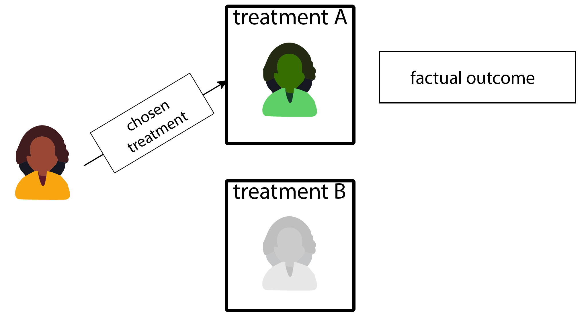

Pearl Causal Hierarchy
Causal Inference at Julius reading group
2024-11-06
Today’s readings:
The ladder of questions
The ladder is a hierarchy of questions
table 1
Notation
- \(X\): treatment (binary, 0,1)
- \(Y\): outcome (binary)
- \(Z\): covariate (age, sex)
- \(p(Y|Z)\): conditional distribution of \(Y\) given \(Z\) (e.g. regression, ‘prediction’)
- \(p(Y_x)\): the causal effect of \(X\) on \(Y\), e.g.:
- \(p(Y_{X=1}=1)\): the probability that \(Y\) would take value 1 when we would set \(X\) to 1 by intervention
- \(P(Y_1) - P(Y_0) = \text{ATE}\) (average treatment effect)
Layer 1: association
- What is the relationship between two or more variables?
- required:
- data (observational / non-experimental): \(p(X,Y,Z)\)
- questions:
- what is the expected survival for men, and for women? \(p(Y|Z=1)\), \(p(Y|Z=0)\)
Layer 2: intervention
- What happens if we intervene on a variable?
- by how much would survival change if we would treat every patient with a certain drug?
- this can be made subgroup specific (the conditional average treatment effect: CATE), e.g. covariate \(Z\): \(p(Y_{X=1}|Z) - p(Y_{X=0}|Z)\)
- when covariate \(Z\) is continuous, every patient has a different CATE, but conceptually this is still the CATE (average over population with same / similar value of \(Z\)), not individual treatment effect
- \(p(Y_{X=1}=1|Z=z)\): the conditional probability that \(Y\) would take value 1 when we would set \(X\) to 1 by intervention, given that \(Z=z\)
- aka ‘prediction under (hypothertical) intervention’
- aka ‘potential outcome prediction’
- aka ‘counterfactual prediction’
Layer 2: intervention, what is required?
- data where \(X\) is controlled by experimentation (randomized controlled trial)
- observational data + sufficient assumptions, typically:
- the directed acyclic graph (DAG) for the variables and no unobserved confounders

Layer 3: counterfactuals
- What would have happened if we had done something else?
- questions:
- given that the ICU patient got vancomycin and developed acute kidney injury, would she have developed AKI if she had not received vancomycin?
- \(P(Y_{X=0}=1|Y=1,X=1)\)
- counterfactuals have an element of:
- something occured in the world (a fact)
- what if we went back to the world and changed a thing, what would have occured then? (a counterfact)
- required:
- knowledge of functional relationships
The hierarchy, what are the worlds?
Layer 2: directed acyclic graph (DAG)
- association: the world as it is
- intervention: the world as we could be under an intervention (as it would be / is in an experiment)
- counterfactuals: the world as it was, and how it might have been if something had been different
The hierarchy, what are the worlds?
- one real world
- one hypothetical world (or real in experiment)
- one real world and a hypothetical world
What are the layers useful for?
- association: description, prediction (know what to expect when observing the world with hands on our backs)
- intervention: policy making, decision making (know what to expect when we change the world)
- counterfactuals: explanation, understanding:
- drug side effects
- digital twins: a digital representation of a physical object or system: typically assumes counterfactual level knowledge, e.g. Sel et al. (2024)
- questions of fairness
The building blocks: structural causal models
What is a SCM?
definition of SCM
- \(U\) is a set of background variables, also called exogenous variables, that are determined by factors outside the model;
- \(V\) is a set \(\{V_1,V_2,...,V_n\}\) of variables, called endogenous, that are determined by other variables in the model - that is, variables in \(U\cup V\);
- \(F\) is a set of functions \(\{ f_1, f_2,..., f_n\}\) such that each fiis a mapping from (the respective domains of) \(U_i \cup Pa_i \to V_i\), where \(U_i \subset U\), \(Pa_i \subset V - Vi\), and the entire set \(F\) forms a mapping from \(U\) to \(V\). That is, for \(i = 1,...,n\), each \(f_i \in F\) is such that
\[v_i \leftarrow f_i(pa_i, u_i)\]
- i.e., it assigns a value to \(V_i\) that depends on (the values of) a select set of variables in \(U \cup V\); and
- \(P(U)\) is a probability function defined over the domain of \(U\).
How are SCMs and DAGs related?
A recursive SCM implies a DAG, by following the order of arguments in the set of functions \(F\). E.G.:
\[ F = \begin{cases} Z \leftarrow f(U_Z) \end{cases} \]
How are SCMs and DAGs related?
A recursive SCM implies a DAG, by following the order of arguments in the set of functions \(F\). E.G.:
\[ F = \begin{cases} Z \leftarrow f(U_Z) \\ X \leftarrow f(Z, U_X) \end{cases} \]
How are SCMs and DAGs related?
A recursive SCM implies a DAG, by following the order of arguments in the set of functions \(F\). E.G.:
\[ F = \begin{cases} Z \leftarrow f(U_Z) \\ X \leftarrow f(Z, U_X) \\ Y \leftarrow f(X, Z, U_Y) \end{cases} \]

How are SCMs and DAGs related?
- A (recursive) SCM implies a DAG,
- but has strictly more information as not only the functional arguments are known,
- but also the functions themselves
Intervening in a SCM: a submodel
A recursive SCM implies a DAG, by following the order of arguments in the set of functions \(F\). E.G.:
\[ F = \begin{cases} Z \leftarrow f(U_Z) \\ X \leftarrow X' \\ Y \leftarrow f(X, Z, U_Y) \end{cases} \]

We can compute the effect of an action by replacing one \(f\) with a constant, e.g. \(X \leftarrow X'\), keep everything else the same, and evaluate the outcomes
Intermezzo: critique on the hierarchy
- The Pearl Causal Hierarchy is a hiearchy of questions
- Some (rightly) argue that the ‘higher’ we go, the more prior assumptions are needed, and the less we rely on experiments
- In a sense of empirical science, the hierarchy is upside down
Theorem 1
Theorem 1
Unpacking an example
example 7a
\(X\): treatment, \(Y\): outcome, \(U_1, U_2\): exogenous noise variables; \(p(U_1=1)=p(U_2=1)=0.5\)
\[ F = \begin{cases} X \leftarrow U_1 \\ Y \leftarrow U_2 \end{cases} \]
- treatment: coin flip
- survival: coin flip (not affected by \(X\))
\[ F' = \begin{cases} X \leftarrow 1_{U_1=U_2} \\ Y \leftarrow U_1 + 1_{X=1,U+1=0,U_2=1} \end{cases} \]
- survival: affected by \(X\)
example 7a
\[ F = \begin{cases} X \leftarrow U_1 \\ Y \leftarrow U_2 \end{cases} \]
\[ F' = \begin{cases} X \leftarrow 1_{U_1=U_2} \\ Y \leftarrow U_1 + 1_{X=1,U+1=0,U_2=1} \end{cases} \]
- both models: same level 1 (observational) distribution \(p(X,Y)\)
- different level 2: \(Y_{X}\)
- cannot tell models apart from observatoinal data alone (i.e. causal effect not identified)
example 7b
\(X\): treatment, \(Y\): outcome, \(U_1, U_2\): exogenous noise variables; \(p(U_1=1)=p(U_2=1)=0.5\)
\[ F = \begin{cases} X \leftarrow U_1 \\ Y \leftarrow U_2 \end{cases} \]
\[ F' = \begin{cases} X \leftarrow U_1 \\ Y \leftarrow X U_2 + (1-X)(1-U_2) \end{cases} \]
- ‘the effect of treatment is determined by the coinflip’
- both models: same level 2 (interventional) distributions
- different level 3: \(Y_{X=0}=1|X=1,Y=0)\)
- cannot tell models apart from level 2 data alone
How are these counterfactuals different from the Potential Outcome framework counterfactuals?
Potential outcomes framwork:
Image two possible futures for a patient


Potential outcomes vs SCMs
- why I like the term potential outcomes: it has a clear sense of futures
- counterfactual in the PO framework: has a clear definition and interpretation
- what I don’t like: using the term counterfactual outcomes when the potential outcomes are meant, and neither has occured yet
- e.g. counterfactual prediction
- in the SCM frawmwork, counterfactuals are closer to the word:
- a fact has been observed (the real world)
- a counter fact has been asked
- this actually conditions on the observed factual data (often not the case in PO framework)
- “given that the ICU patient got vancomycin and developed acute kidney injury, would she have developed AKI if she had not received vancomycin?”
References
©Wouter van Amsterdam — WvanAmsterdam — wvanamsterdam.com/talks